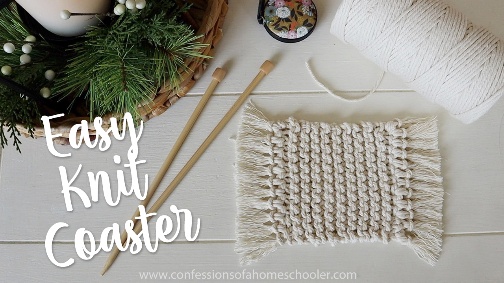

Proyek knit pertama untukmu!
Pada artikel ini akan dibahas mengenai proyek yang cocok untuk melakukan knit pertama kali. Kami membuat tatakan gelas knit yang sangat mudah dan menyenangkan ini dan hari ini saya menunjukkan cara membuatnya. Mereka sempurna untuk pemula karena sangat cepat dan mudah. Anda hanya perlu tahu cara memasang, menjahit, dan mengikat. Dan tentu saja, saya akan menunjukkan semuanya dalam tutorial video! Saya pikir mereka akan membuat ide hadiah yang lucu juga, membuat bundel berisi empat dan menggabungkannya dengan kartu yang bagus, atau bahkan mug lucu dan Anda sudah siap! Tentu saja, Anda juga bisa membuat beberapa untuk rumah Anda sendiri!

Bahan
- Benang Macrame 3mm
- Jarum Rajut Knit Bambu US10 / 6MM
- Crochet hook
- Gunting
Untuk instruksi knit, simak video berikut ini!
Source: ConfessionsOfaHomeSchooler.
Komentari artikel ini!